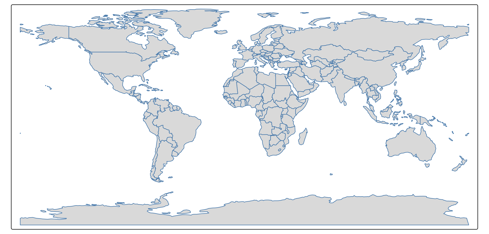
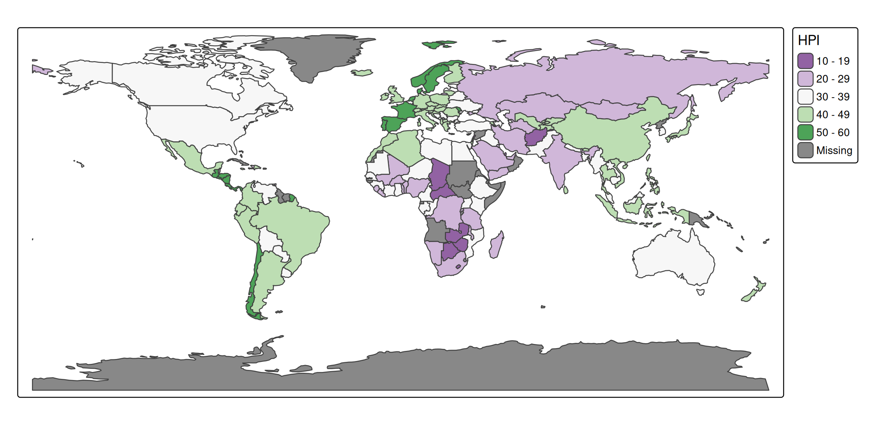
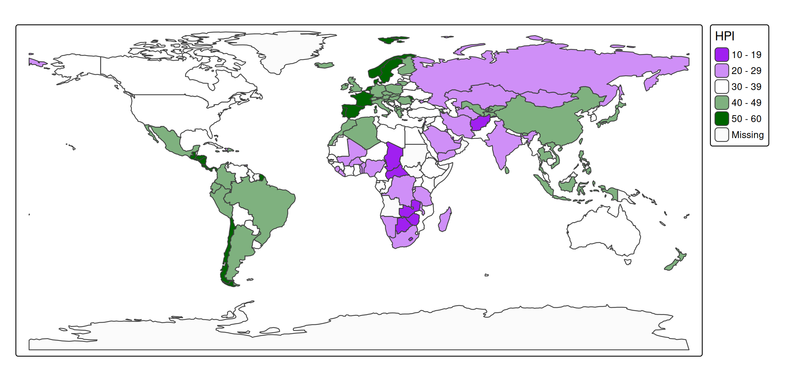
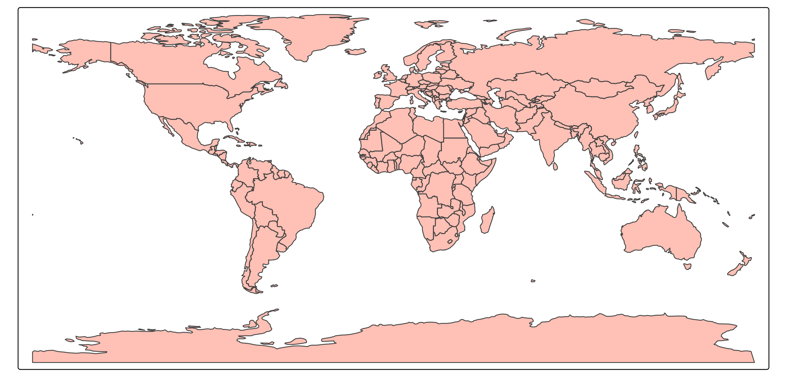
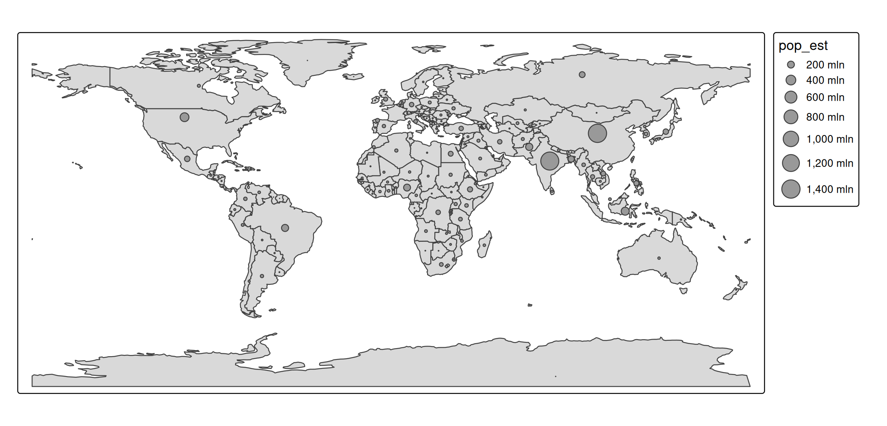
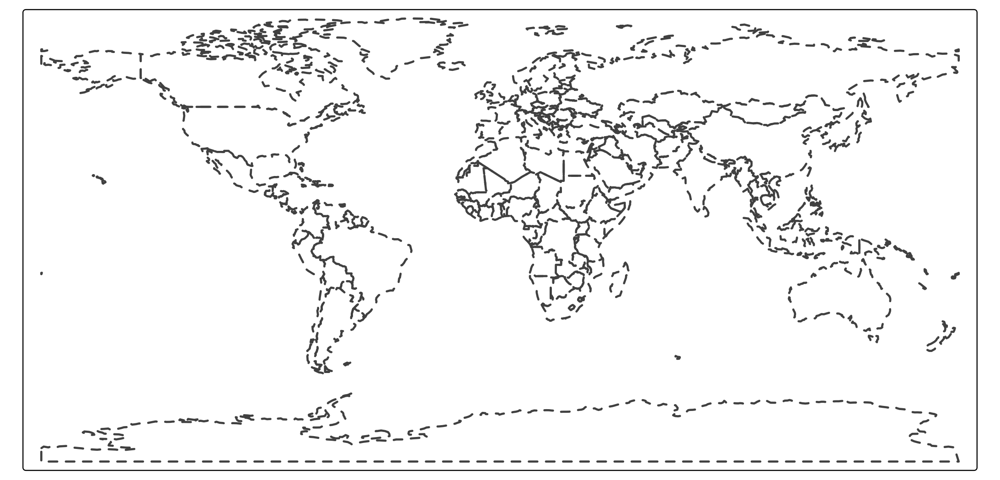
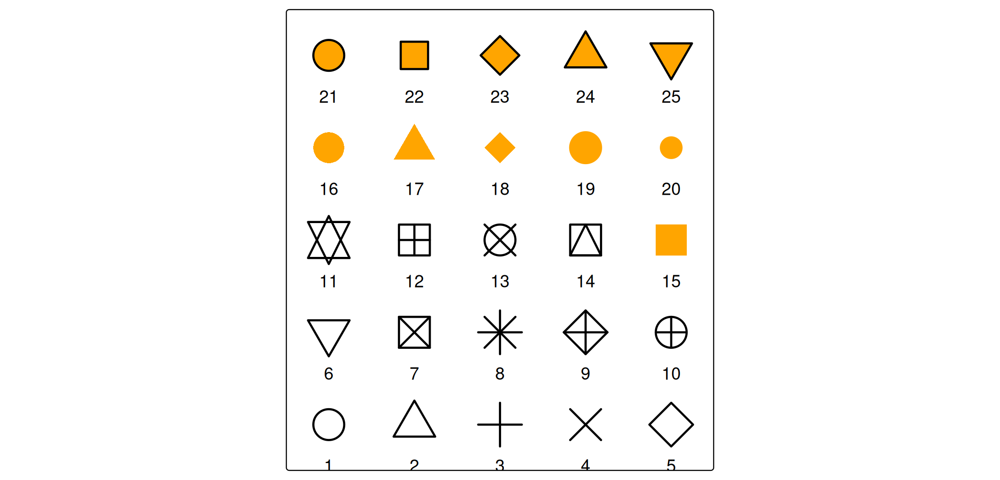
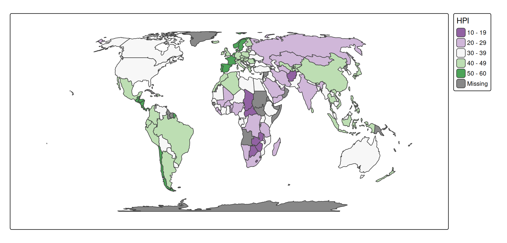
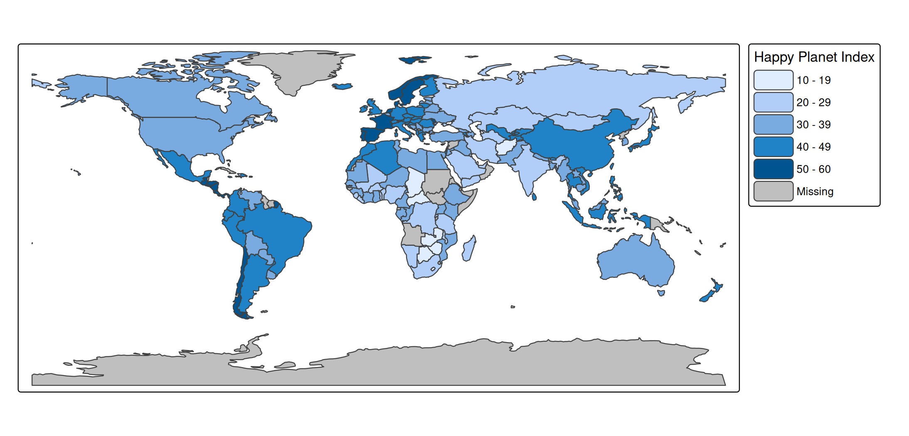
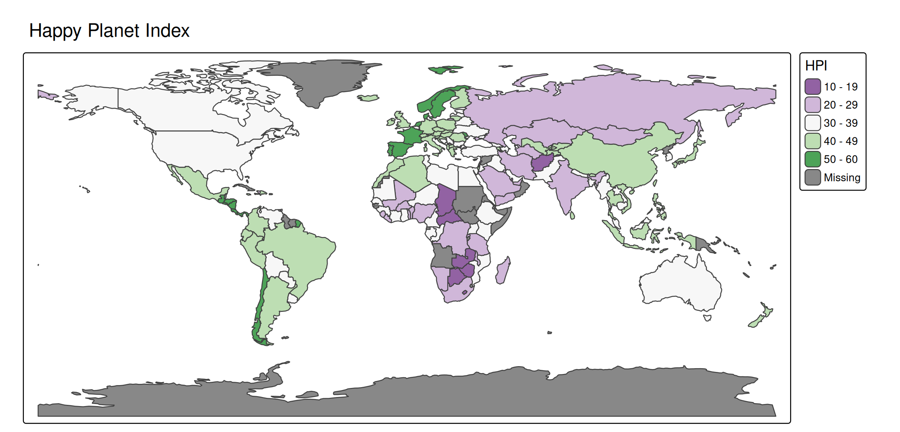

Why units matter
Most of the time tmap chooses sensible values automatically, so the units behind them stay invisible. They become relevant the moment you set a value by hand, for example:
- a constant visual value via
tm_const()(e.g.tm_polygons(lwd = 2)), - an output range via
values.rangeorvalues.scalein a scale function, - a margin, a component size, or a font size in
tm_layout()or a component function.
This vignette collects the units used throughout the package. There are two groups: the visual variable units that data values are mapped to, and the layout units used for margins, component sizes, and fonts.
Visual variable units
A visual variable (fill, size, lwd, …) maps a data variable to an output value with a specific unit. The same units apply when you supply a constant instead of a data variable.
| Variable | Unit | Notes |
|---|---|---|
fill, col, bgcol
|
color | a color name, hex string, or palette |
fill_alpha, col_alpha, bgcol_alpha
|
proportion 0–1 | 0 = transparent, 1 = opaque |
size (symbols, bubbles, squares, dots) |
typographic lines | 1 line ≈ 1/6 inch; scaled by values.scale
|
size (circles) |
meters | plain numeric, or a units object |
size (text, labels) |
multiplier | 1 = the base font size |
lwd |
lwd | base R line-width units (≈ 0.75 pt at 96 dpi) |
lty |
— | integer 1–6, or a name ("solid", "dashed", …) |
shape |
— | integer pch 1–25, or a single character |
angle |
degrees | 0–360, clockwise from north |
fontface |
— |
"plain", "bold", "italic", "bold.italic"
|
Color
A color is any R color name or hex string, so "red", "#FF0000", and "#FF000080" (with alpha) are all valid:
tm_shape(World) +
tm_polygons(fill = "grey85", col = "#4477AA", lwd = 1)
#> [tip] Consider a suitable map projection, e.g. by adding `+ tm_crs("auto")`.
#> This message is displayed once per session.
Color palettes
Wherever a single color is expected, a palette defines the colors used by a scale. A palette is either a vector of colors or the name of a cols4all palette:
# a named cols4all palette
tm_shape(World) +
tm_polygons("HPI", fill.scale = tm_scale_intervals(values = "pu_gn"))
# an explicit vector of colors
tm_shape(World) +
tm_polygons("HPI", fill.scale = tm_scale_intervals(values = c("purple", "white", "darkgreen")))
A leading "-" reverses a named palette (e.g. "-pu_gn"). The full set of palette names is available via cols4all::c4a_gui().
Transparency
Alpha (fill_alpha, col_alpha, bgcol_alpha) is a proportion between 0 (fully transparent) and 1 (fully opaque):
tm_shape(World) +
tm_polygons(fill = "tomato", fill_alpha = 0.4)
Size
size is the one visual variable whose unit depends on the layer, because three different things are sized in three natural units:
In
tm_symbols(),tm_bubbles(),tm_squares(), andtm_dots(),sizeis measured in typographic lines (one line ≈ 1/6 inch). These symbols keep a fixed screen size, so they do not grow when you zoom in view mode. The global multipliertmap_options(values.scale = list(...))rescales all symbols without changing the data mapping.In
tm_circles(),sizeis a geographic radius in meters. A plain number is read as meters; aunitsobject is converted automatically, sounits::as_units(50, "km")is a 50 km radius. Because the radius is geographic, circles do scale with zoom in view mode.In
tm_text()andtm_labels(),sizeis a multiplier of the base font size (see fonts below), sosize = 1.5is 1.5× the default text size.
tm_shape(World) +
tm_polygons() +
tm_bubbles(size = "pop_est")
Line width and line type
lwd uses base R’s line-width units (the same lwd you pass to par() or lines()); it is not measured in pixels, though at 96 dpi one unit is roughly 0.75 pt. lty is an integer 1–6 or a name such as "dashed":
tm_shape(World) +
tm_borders(lwd = 2, lty = "dashed")
Shape
shape is an integer pch code between 1 and 25, the same plotting symbols base R uses. The map below plots all 25:
atlantic_grid = cbind(expand.grid(x = -51:-47, y = 20:24), id = seq_len(25))
x = sf::st_as_sf(atlantic_grid, coords = c("x", "y"), crs = 4326)
tm_shape(x, bbox = tmaptools::bb(x, ext = 1.2)) +
tm_symbols(
shape = "id",
size = 2,
lwd = 2,
fill = "orange",
col = "black",
shape.scale = tm_scale_asis()) +
tm_text("id", ymod = -2)
Codes 21–25 have both a fill (fill) and a border (col); the lower codes use col only.
Angle and fontface
angle (e.g. for tm_symbols() or tm_text()) is in degrees, clockwise from north. fontface is one of "plain", "bold", "italic", or "bold.italic".
Layout units
The second group of units controls the frame, the margins, and the components (legends, titles, scale bars, …). These are independent of the data.
Margins
There are three margin sets, each a vector of four numbers in the order bottom, left, top, right:
-
inner.margins— between the spatial data and the map frame, relative to the map frame (so0.25is a quarter of the frame width or height). -
meta.margins— the band reserved for components outside the map, relative to the device. -
outer.margins— between the plot and the device border, relative to the device.
In every case 1 means the full width (for left/right) or full height (for top/bottom).
tm_shape(World, crs = "+proj=eqearth") +
tm_polygons("HPI", fill.scale = tm_scale_intervals(values = "pu_gn")) +
tm_layout(inner.margins = c(0.1, 0.1, 0.1, 0.1))
Margins are covered in detail in the margins vignette.
Component sizes, paddings, and spacing
The width and height of components, and the paddings, offsets, and spacing between and inside them, are expressed in text line heights: the height of one line of text at the current font size. This makes the layout scale naturally with the font size. It applies to, among others, the width/height of tm_legend(), tm_scalebar(), tm_title(), and tm_inset(), the bg.padding and halo widths of tm_text(), the space of tm_xlab()/tm_ylab(), and the xmod/ymod offsets of tm_text().
tm_shape(World) +
tm_polygons(
fill = "HPI",
fill.legend = tm_legend(
title = "Happy Planet Index",
item.height = 1.5,
item.width = 3))
For tm_legend() specifically, a negative width or height switches the unit to approximate pixels; the relation between line heights and pixels is governed by the absolute_fontsize option.
Font sizes
Font sizes for components (text.size, title.size, the size of panel labels, scale-bar text, etc.) are multipliers of the base font size, the same convention as cex in base R and as text size in tm_text(). For example, the default legend text size is 0.7 and the default legend title size is 0.9.
tm_shape(World) +
tm_polygons("HPI", fill.scale = tm_scale_intervals(values = "pu_gn")) +
tm_title("Happy Planet Index", size = 1.2)
Global scaling
The single option scale (set via tmap_options(scale = ...) or tm_layout(scale = ...)) multiplies all sizes at once: symbol sizes, line widths, and font sizes. It is the quickest way to scale a whole map up or down, for instance when exporting at a different size. The vignettes in this site use tmap_options(scale = 0.75).
Positions
Component positions are not a numeric unit but a small grammar of their own: a tm_pos object created with tm_pos_in() or tm_pos_out(), or a shortcut of two keywords (horizontal: "left", "center", "right"; vertical: "top", "center", "bottom"). See the positions vignette for details.
Summary
| Quantity | Unit |
|---|---|
Colors (fill, col, bgcol) |
color name or hex string |
Color palettes (values) |
vector of colors, or a cols4all palette name |
Transparency (*_alpha) |
proportion 0–1 |
| Symbol size (symbols, bubbles, squares, dots) | typographic lines (≈ 1/6 inch) |
Circle size (tm_circles) |
meters (numeric or units object) |
Text size (tm_text, tm_labels) |
multiplier of the base font size |
lwd |
base R line-width units |
lty |
integer 1–6 or name |
shape |
pch integer 1–25 or single character |
angle |
degrees, clockwise from north |
inner.margins |
relative to the map frame (0–1) |
outer.margins, meta.margins, paddings |
relative to the device (0–1) |
Component widths/heights, spacing, xmod/ymod
|
text line heights (legend: negative ⇒ pixels) |
Font sizes (text.size, title.size, …) |
multiplier of the base font size |
scale |
global multiplier for sizes, line widths, fonts |
| Positions |
tm_pos object or two keywords |